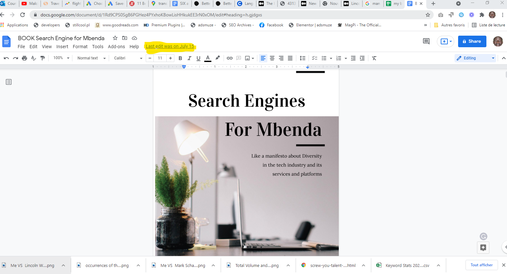
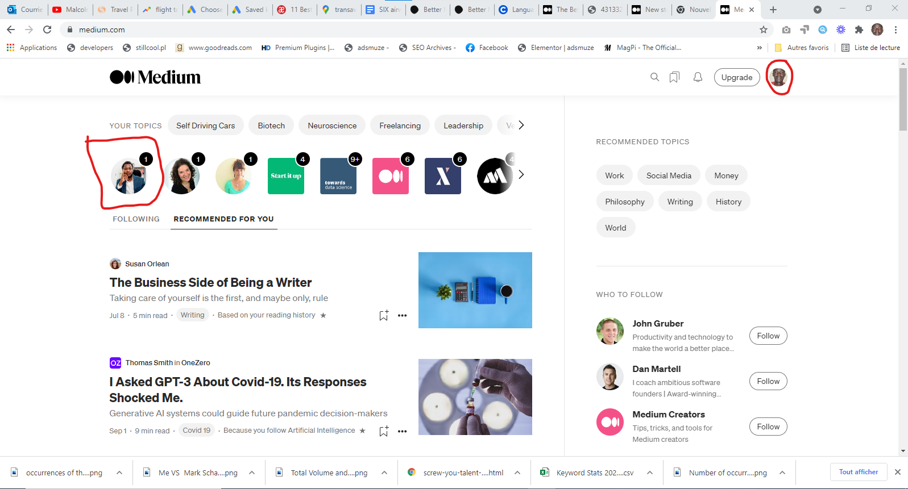
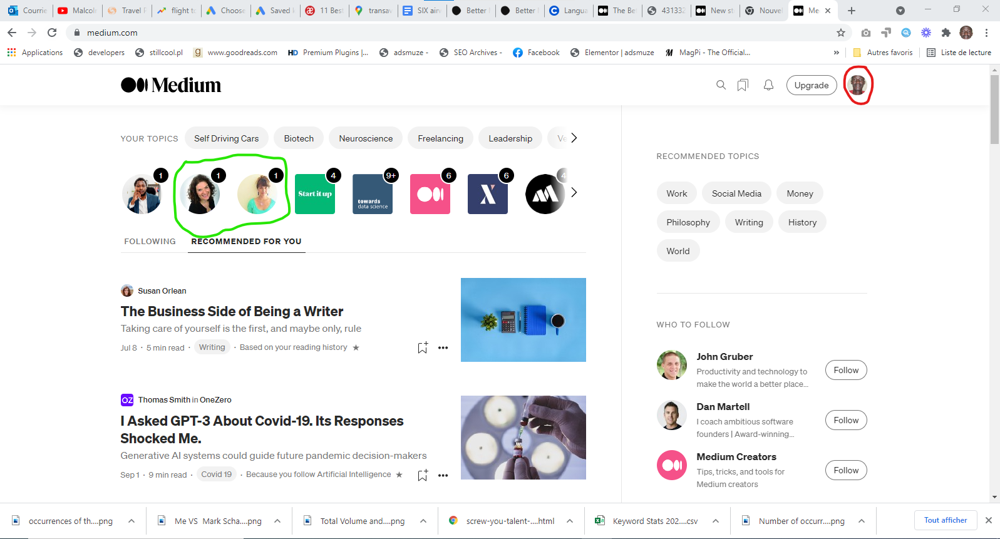
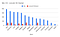
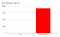
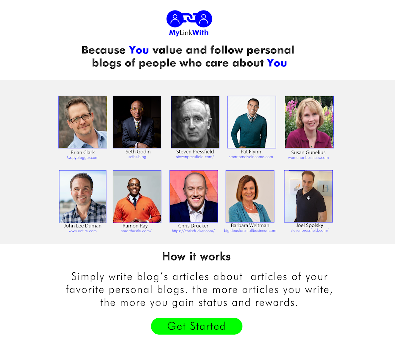

Diversity and Location-based content filtering
Mbenda really deserves her search engine and why not many other platforms also


yes, when you are writing and publishing online from Africa you are less likely to be readers from other countries given the state of the art of publication platforms recommendation systems and given search engines ranking factors. People Like you read Things like this is the mantra and that’s how machine learning systems are designed then if location data is part of the machine learning algorithm features it is more likely that you will be suggested fewer articles from Africa because there are fewer like me writing and publishing from Africa. It is also obvious that if the machine learning algorithm takes the profile image as a feature you will more likely get suggested people like you but I don't know the proportion and if publication platforms and search engines really implement this feature but I really believe that almost all internet publishing, search and social media platforms do.
For example here is the landing page I get on medium

I never asked to know about Lincoln W Daniel but his profile is here when I open Medium and I really discovered some of his articles that I find very interesting and worth reading even if I should agree that I am not reading him to say that misbehavior of recommendation systems have not erased away this important feature of internet which is about connecting great people and we are sincerely all great human beings. Maybe it is because I have written a lot about women software engineers like Mbenda that I have been suggested Sloane Miller and Lauren Modery, these two great women that I am eager to read from.

Still hiding many of my works that should be made public and the few I am sharing are the result of my commitment to reading and following people like Seth Godin who really helped me overcome my writer’s block. But I am eager to share more because if I was you should already know that what I was highlighting in the paragraphs above has been thought and written a long time ago here in some of my drafted books and notes about technology, marketing, engineering, and diversity of ideas. People like us do things like this is something that I have just learned from Seth and it is a very powerful marketing concept and a real engine for a community lifestyle that keeps connecting us not because we are the same because we all are different but so empathic that we see other as we see ourselves.
This article is inspired by this tweet
and this great reply from Mark Schaefer
To which I have replied before writing this article to go more into details about what I was highlighting in this tweet
if these tech-enabled platforms I was talking about in this tweet
was in production then I would be more engaged in clapwords which is about writing good words about people like what I am doing with the Greyio Heart Experiment.
But I will be making another “comparison” (learning) like the one I have done with Mark Schaefer but with Lincoln W Daniel


Owning the medium is important and I have already written about this fact.
Then I think that it is time for you and me to build and own our own and to share our great works with the world while connecting with people and achieving things with them.
That’s how I see a Book, Like A medium that everyone who can write can own. It is not easy to sit and write down our thoughts and ideas that’s why many of us are afraid about writing which is the first step into the journey of publishing a book. Like you, I am constantly fighting my writer’s block which is a myth, and avoiding hiding my works deep inside these hard drives and cloud storage like this book I started in July that I have not edited since July 25, 2021, and it is here as a 24 pages manifesto about diversity in tech. The main ideas I am writing in this article are here inside what I am willing to be a 99 pages book worth publishing.

PS: in the spirit of this idea below

I had made in my mind a promise to write an article about Mbende every time she publishes a vlog on youtube (above it is about blogs). Then this article could be a means for fulfilling this promise. Hope I kept my internal promise and will always in the future. Isn’t all of this about Diversity in Tech
here is the last video of Menda
I am really struggling with all these ideas to code and these codes to review. seems like I am hiding behind writing article just for not coding.